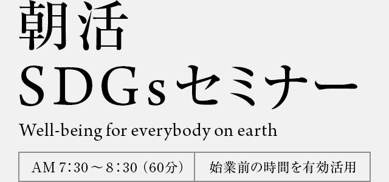

あなたのビジネスをプラスサムにする10の方法
SDGsという体系に隠された付加価値とは何なのか
それは経営において各指標に貢献するという単純なことではない
企業利益と存続を根底から揺さぶる程のインパクトが隠されている
1967年福岡県福岡市生まれ。東京大学工学部原子力工学科卒、同経済学部中退、ニューヨーク大学法学院客員研究員。1991年度外務公務員I種試験合格、92年外務省に入省し、国連政策課、人権難民課、アフリカ二課、国連行政課、国連日本政府代表部一等書記官等を歴任。2001年より2年間は、緒方貞子氏の補佐官として「人間の安全保障委員会」事務局勤務。2005年11月外務省を退職、同月より国際連合事務局・人間の安全保障ユニット課長、2010年10月より3年間はパキスタンにて国連広報センター長。外務省での専門語学は英語、河野洋平外務大臣、田中真紀子外務大臣等の通訳を務めた。2014年5月に国連を退職、同6月よりデロイトトーマツコンサルティングの執行役員に就任。同社CSR・SDGs推進室長として日本経済と国際機関・国際社会の「共創」をテーマに、企業の世界進出を支援、人権デュー・デリジェンス、SDGsとESG投資をはじめとするグローバル基準の標準化、企業のサステイナビリティ強化支援を手がけた。2017年9月に独立し、新会社SDGパートナーズを設立して現在同社代表取締役CEO。また、同年10月1日より国際機関GPE（教育のためのグローバル・パートナーシップ）の日本コーディネータに就任。私生活においては、7,500人以上のメンバーを擁する「国連フォーラム」の共同代表を2004年より務める。
経営への内部化、戦略的位置づけ、企業価値の向上
投資家の動き、ESG情報ベンダーの傾向、GPIFの動き、ESG投資におけるマテリアリティと定量化
調達コード、サプライチェーンのトレーサビリティ、認証制度、消費者への情報提供
ビジネスと人権に関する国連原則「ラギー原則」、人権侵害の実態、各国の対応状況等
企業におけるラギー原則への対応、人権デューデリジェンス、救済と苦情処理メカニズム
マイノリティの権利、障害者、高齢者、子どもの貧困
リソースと機会、環境未来都市との関係、実例
国連と企業の共創、JICA・JETRO、BoPビジネスとSDGsビジネスの違い
イノベーション、人材育成、地域への貢献
well-beingのビジネスとの繋げ方、マインドフルネス、働き方
2018年1月時点でのSDGs概観
などSDGsをめぐる大きな流れについて最新の視点から分析します。
SDGsをこれから本格的に学びたいと思われている方もぜひご参加ください。
セミナー・サイトに関するお問い合わせはこちら